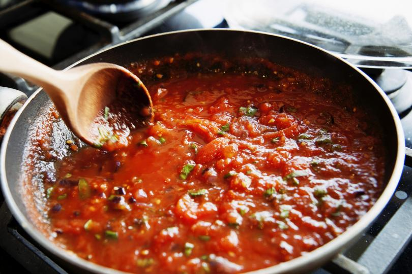
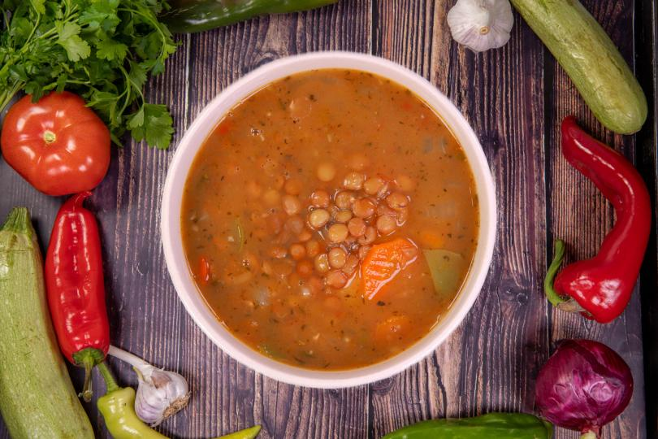
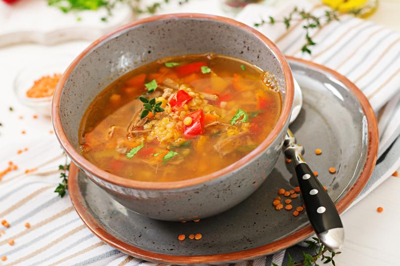

Всички помним колко хубаво ухаеше в кухнята на баба, когато бяхме малки. Бабите ни имаха вълшебната способност да правят най-вкусните си сгряващи душата гозби. А супите и чорбите са тяхната запазена марка.
Чорбите и супите се приготвят от най-различни продукти: месо, птици, зеленчуци, риби, варива, тестени изделия и плодове. И най-често се разделят на две - със запръжка и със застройка.
Първото правило е следното:

Супите, чорбите и бульонът се поднасят на масата само горещи. Студените супи убиват апетита и не спомагат за доброто усвояване на храната от организма. Супите трябва да имат и добър, естетичен вид и приятен вкус.

Застройката на супите се приготвя от яйца /за предпочитане е само от жълтъците/, кисело мляко и брашно. Начинът на приготвяне е следният: в тенджера с обло дъно се счупват яйцата, слага се брашното и се разбива добре с тел за разбиване
на яйца. Прибавя се киселото мляко и наново се разбива, за да не остане застройката на бучки. След това се слага на огъня и се бърка непрекъснато, докато заври, като през това време се разрежда с част от бульона на супата. В така приготвената
застройка се слага малко сок от лимон или оцет. Ако не се изпълнят точно технологичните указания за приготвяне, застройката се пресича. За да не се пресече, супата се отстранява от огъня, поизстива и тогава постепенно се прибавя готовата
застройка. След прибавяне на готовата застройка в супата се долива чаша студена вода.
Перфектната застройка за супа
Застройката на супите се приготвя от яйца /за предпочитане е само от жълтъците/, кисело мляко и брашно. Начинът на приготвяне е следният: в тенджера с обло дъно се счупват яйцата, слага се брашното и се разбива добре с тел за разбиване на яйца. Прибавя
се киселото мляко и наново се разбива, за да не остане застройката на бучки. След това се слага на огъня и се бърка непрекъснато, докато заври, като през това време се разрежда с част от бульона на супата. В така приготвената застройка се слага
малко сок от лимон или оцет. Ако не се изпълнят точно технологичните указания за приготвяне, застройката се пресича. За да не се пресече, супата се отстранява от огъня, поизстива и тогава постепенно се прибавя готовата застройка. След прибавяне
на готовата застройка в супата се долива чаша студена вода.
Важно е да се знае на кои супи какви подправки подхождат
Теди
Супите от агнешко месо се подправят с джоджен, девесил, магданоз, копър и черен пипер.
Подходящите подправки за супи

Супите от говеждо и телешко месо се подправят с магданоз и черен пипер, чорбата от стар фасул с джоджен, чорбата от леща с чубрица, супите от птици с магданоз и черен пипер.